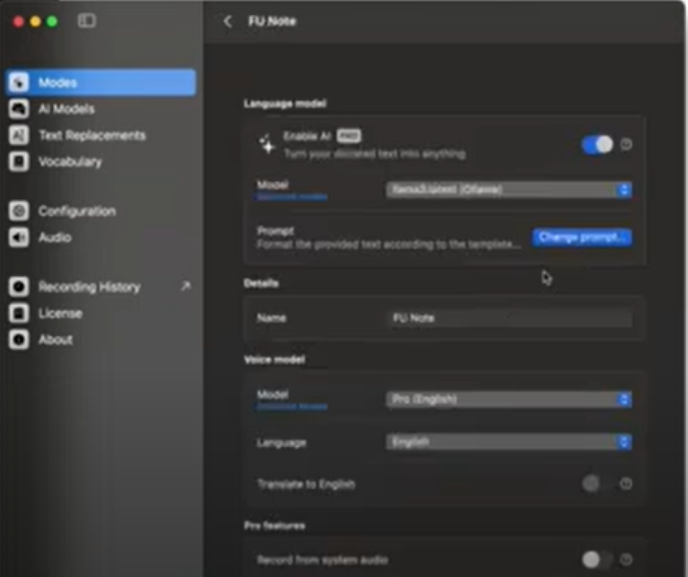
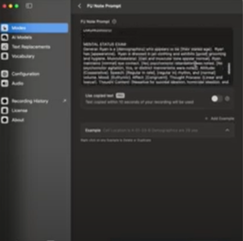

Writing Medical Chart Notes
Introduction
Did you know that Superwhisper has helped doctors with writing their medical follow ups?
If you too are in the medical profession and would want a way to fasten up your process for creating a follow up, then the below is for you.
Even if you are not in the medical field, the below use case demonstrates how Superwhisper can format an analytical piece of paper.
Steps


Try it Yourself
[Give a scenario]
Create any type of analytical piece that outlines the problem in this scenario, given information that might help, and your solution.